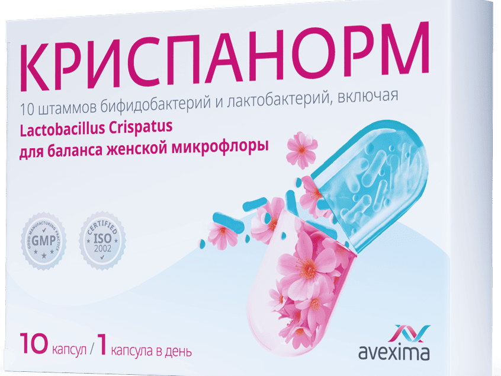

Криспанорм
Инновационный*1, клинически обоснованный** синбиотик, разработанный специально
для нормализации женской микрофлоры2

Что важно знать о Криспанорм?
Когда нужен Криспанорм?
Для бережного поддержания баланса женской микрофлоры,
который нарушается при воздействии следующих факторов2,13:
приеме антибиотиков
(в том числе, интравагинально)
активной сексуальной жизни
(в том числе, при использовании вагинальных колец и спермицидов)
гормональных нарушениях
(в том числе, в период менопаузы)

Способствует нормализации одновременно вагинальной микрофлоры и микрофлоры ЖКT2
Криспанорм
выпускается в растительной капсуле, содержащей2:
Криспанорм содержит в своем составе L. Crispatus — одни из наиболее важных представителей здоровой микрофлоры влагалища2,13:
Доказано, что L. Crispatus наиболее эффективно производят молочную кислоту для поддержания естественного уровня pH во влагалище
При преобладании
в микрофлоре влагалища L. Crispatus, риск вероятности заражения ИППП ниже
в микрофлоре влагалища L. Crispatus, риск вероятности заражения ИППП ниже
L. Crispatus стимулируют образование здоровой биопленки, которая является преградой для вторжения
и размножения патогенов
и размножения патогенов
L. Crispatus стимулируют выработку слизи, которая необходима для защиты вагинальной микрофлоры
Как принимать Криспанорм2?
Ссылки
Скрыть все
Бад. Не является лекарственным средством. Имеются противопоказания